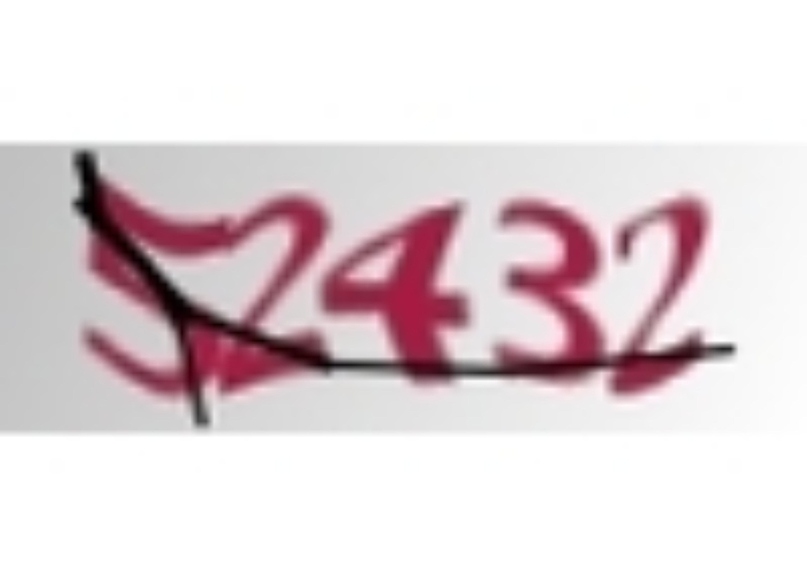
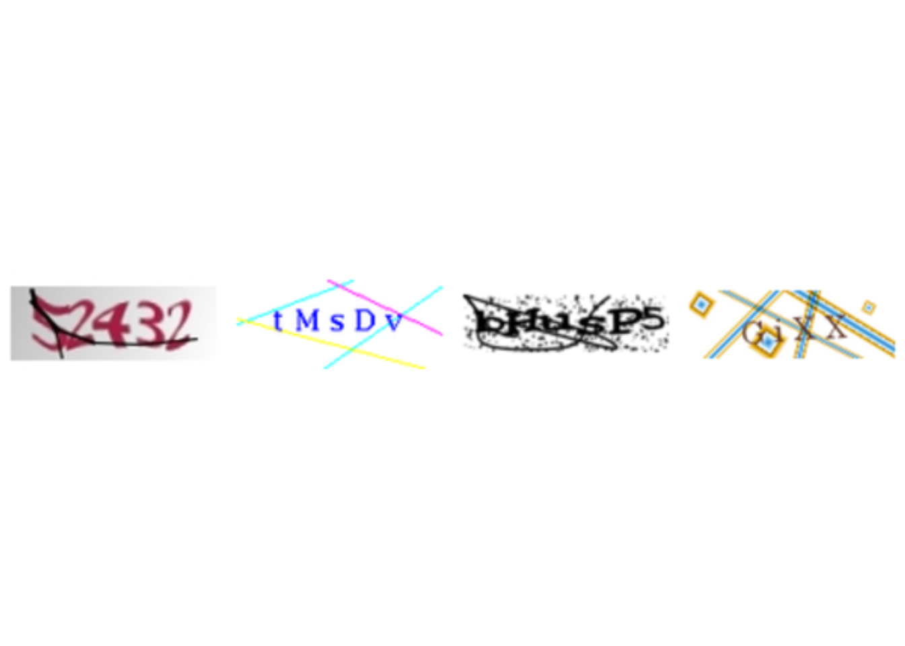
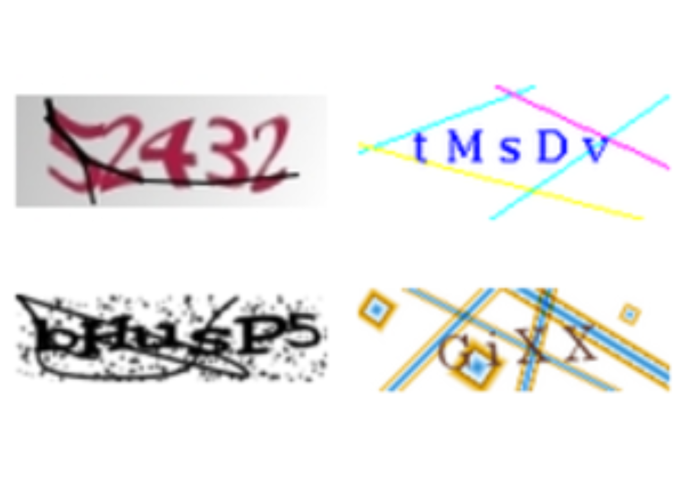
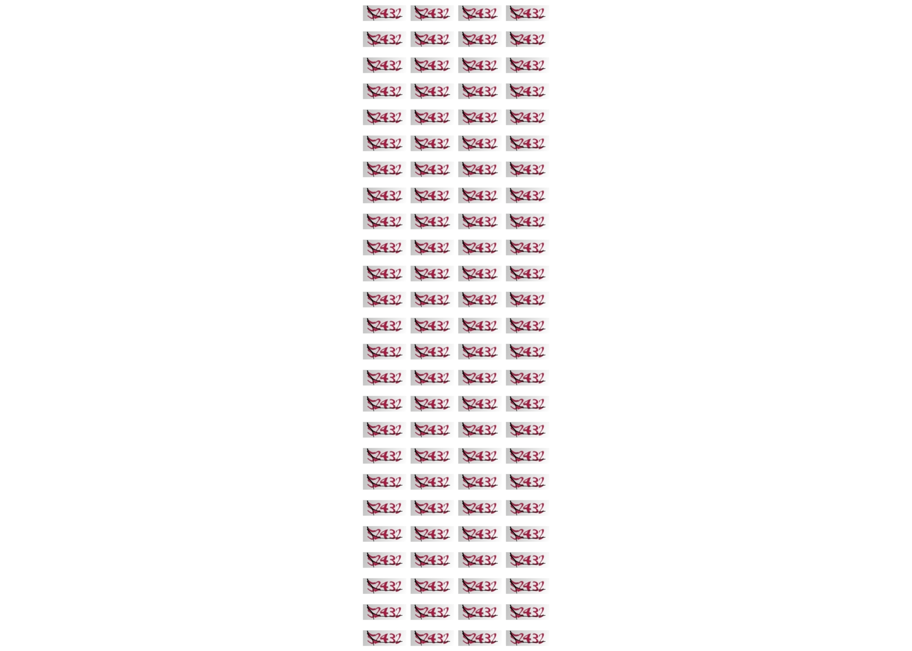
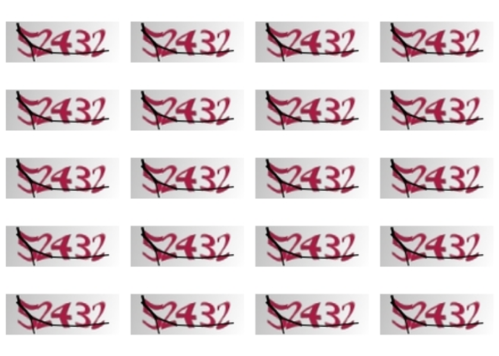
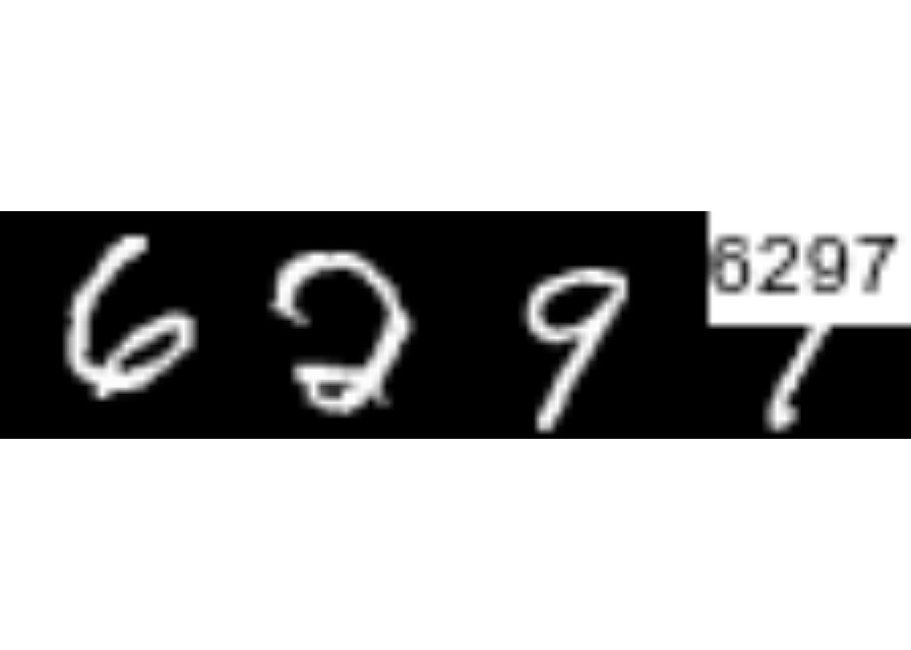

Código
library(captcha)
exemplo <- "assets/img/dados_tjmg.jpeg"
captcha <- read_captcha(exemplo)
captcha
#> format width height colorspace matte filesize density
#> 1 JPEG 100 50 sRGB FALSE 4530 72x72Este apêndice foi construído para mostrar a estrutura do pacote e suas funcionalidades, mas também um pouco da história. O pacote {captcha} é fruto de um trabalho da comunidade e o trabalho de modelagem de Captchas usando técnicas de deep learning começou alguns anos antes do início da tese de doutorado.
O trabalho de resolução de Captchas pelo autor da tese surgiu no ano de 2016. Como foi comentado na introdução da tese, é muito comum se deparar com desafios de Captchas ao raspar dados do judiciário, já que os dados não são abertos.
O primeiro Captcha a ser investigado foi o do sistema e-SAJ. O desafio era utlizado no site do TJSP que, depois de alguns anos, passou a utilizar o sistema reCaptcha. O Captcha do SAJ faz parte da tese, mas tem como fonte de dados o TJBA, que continua utilizando o desafio até o momento que os sites foram investigados pela última vez, em setembro de 2022.
A primeira abordagem para resolver o Captcha do e-SAJ foi utilizando heurísticas para separar as letras, em 2016. Infelizmente o pacote original, chamado {captchasaj}, foi removido da internet, mas um código legado construído para o TJRS está disponível neste link. Nessa abordagem, as letras primeiro são segmentadas, alimentando um modelo de florestas aleatórias que considera os pixels da imagem como variáveis preditoras e a letra como resposta. Esses trabalhos tiveram contribuições importantes de Fernando Corrêa e Athos Damiani.
A segunda abordagem para resolver os Captchas foi utilizando o áudio, também em 2016. O código para resolver o Captcha da RFB utilizando áudio está disponível neste link. A ideia de resolução era parecida, passando pelo procedimento de segmentação e depois de modelagem, mas tinha um passo intermediário de processamento envolvendo engenharia de features (KUHN; JOHNSON, 2019). O trabalho teve contribuições importantes de Athos Damiani.
Com o advento da ferramenta TensorFlow para o R (ALLAIRE; TANG, 2022), os modelos passaram a utilizar modelos de redes neurais. No início, por falta de conhecimento da área, a arquitetura das redes era demasiadamente complexa. Depois que os primeiros modelos começaram a funcionar, notou-se que as etapas de pré-processamento com segmentação e algumas camadas das redes eram desnecessárias para ajustar os modelos. Essa parte teve grande contribuição de Daniel Falbel, que foi a pessoa que introduziu o TensorFlow e a área de deep learning aos colegas.
Depois de resolver com sucesso alguns Captchas, notou-se que seria possível criar um ambiente completo de modelagem de Captchas. Isso deu origem ao pacote {decryptr} (TRECENTI et al., 2022), que foi construído em 2017 durante uma datathon (uma maratona de programação), na casa de amigos. O trabalho teve grandes contribuições de Caio Lente, com participação das colegas de faculdade Milene Farhat e Beatriz Vianna.
Com o passar do tempo, o pacote {decryptr} ficou cada vez mais estável, funcionando como dependência de várias ferramentas utilizadas nos trabalhos de jurimetria. O pacote também ganhou um site: <https://decryptr.xyz/> e uma API com acesso gratuito, precisando apenas de uma chave de acesso. A ferramenta ficou bastante popular, com 178 estrelas no GitHub no mês de dezembro de 2022. Essas ferramentas envolveram contribuições principalmente de Caio Lente e Daniel Falbel.
A construção do pacote {captcha} separada do {decryptr} se deu por dois motivos. Primeiro, o pacote {decryptr}, por ser o primeiro a tratar do assunto, possui muitos códigos legado e dificuldades de instalação por conta da dependência do python, necessário para o funcionamento do TensorFlow, que é chamado através do pacote {reticulate} (USHEY; ALLAIRE; TANG, 2022). Além disso, a implementação das técnicas do oráculo envolviam modificações na função de perda, que são difíceis de implementar no ambiente do {tensorflow}, justamente por conta da necessidade de conhecer o código python que roda por trás dos códigos mais usuais.
Com o advento do pacote {torch}(FALBEL; LURASCHI, 2022), no entanto, tudo foi facilitado. O pacote não possui dependências com o python, além de ser bastante transparente e flexível na construção da arquitetura do modelo, funções de perda e otimização. O pacote, também construído por Daniel Falbel, é um grande avanço científico e facilitou muito a construção dos códigos desta tese.
O pacote {captcha}, apesar de ter sido construído do zero, foi desenvolvido durante lives realizadas na plataforma Twitch. A construção em lives foi interessante porque era possível obter feedback e ideias da comunidade durante a construção da ferramenta, o que acelerou o desenvolvimento e auxiliou na arquitetura do pacote.
Com o desenvolvimento da tese, notou-se a necessidade de construir alguns pacotes adicionais. Os pacote {captchaDownload} e {captchaOracle} foram desenvolvidos para facilitar a obtenção dos resultados da tese, enquanto o pacote {captcha} pode ser utilizado por qualquer pessoa interessada em visualizar, classificar e resolver Captchas. As próximas subseções do apêndice descrevem os três pacotes.
O pacote {captcha} foi construído para funcionar como uma caixa de ferramentas para pessoas que desejam trabalhar com Captchas. O pacote possui funções de leitura, visualização, classificação, preparação de dados, modelagem, carregamento de modelos pré-treinados e predição. O pacote também permite a construção de um fluxo de trabalho para resolver um novo Captcha, criando um pacote para orquestrar o passo-a-passo.
A utilização básica do {captcha} envolve as funções read_captcha(), plot(), captcha_annotate(), captcha_load_model() e decrypt(). As funções são explicadas abaixo.
A função read_captcha() lê um vetor de arquivos de imagens e armazenar na memória. Por trás, a função utiliza o pacote {magick} para lidar com os tipos de arquivos que podem aparecer (JPEG, PNG, entre outros).
library(captcha)
exemplo <- "assets/img/dados_tjmg.jpeg"
captcha <- read_captcha(exemplo)
captcha
#> format width height colorspace matte filesize density
#> 1 JPEG 100 50 sRGB FALSE 4530 72x72A função retorna um objeto com a classe captcha, que pode ser utilizada por outros métodos.
class(captcha)
#> [1] "captcha"O objeto é uma lista com três elementos: $img, que contém imagem lida com o pacote {magick}, $lab, que contém o rótulo da imagem (por padrão, NULL) e $path, que contém o caminho da imagem que foi lida.
str(captcha)
#> Class 'captcha' hidden list of 3
#> $ img :Class 'magick-image' <externalptr>
#> $ lab : NULL
#> $ path: chr "assets/img/dados_tjmg.jpeg"A função read_captcha() possui um parâmetro lab_in_path=, que indica se o rótulo está contido no caminho da imagem. Se lab_in_path=TRUE, a função tentará extrair o rótulo do arquivo (obtendo o texto que vem depois do último _ do caminho) e armazenar no elemento $lab.
exemplo <- "assets/img/mnist128c49c36e13_6297.png"
captcha <- read_captcha(exemplo, lab_in_path = TRUE)
str(captcha)
#> Class 'captcha' hidden list of 3
#> $ img :Class 'magick-image' <externalptr>
#> $ lab : chr "6297"
#> $ path: chr "assets/img/mnist128c49c36e13_6297.png"A função plot plot() é um método de classe S3 do R básico. A função foi implementada para facilitar a visualização de Captchas. A função recebe uma lista de imagens obtida pela função read_captcha() e mostra o Captcha visualmente, como na Figura A.1.
exemplo <- "assets/img/dados_tjmg.jpeg"
captcha <- read_captcha(exemplo)
plot(captcha)
captcha.Um aspecto interessante da função plot() é que ela lida com uma lista de Captchas. Isso é útil quando o interesse é visualizar vários Captchas de uma vez na imagem. A Figura A.2 mostra um exemplo de aplicação
exemplos <- paste0("assets/img/", c(
"dados_tjmg.jpeg",
"dados_esaj.png",
"dados_rfb.png",
"dados_sei.png"
))
captchas <- read_captcha(exemplos)
plot(captchas)
captcha com várias imagens.Por padrão, a função plot dispõe as imagens em quatro colunas. Para mudar o padrão, é possível modificar as opções usando options(captcha.print.cols = N), onde N é o número de colunas desejado. A Figura A.3 mostra um exemplo com duas colunas.
options(captcha.print.cols = 2)
plot(captchas)
captcha com várias imagens, disponibilizadas em duas colunas.Quando o vetor de Captchas é muito grande, a função plot() mostra um número máximo d imagens, acompanhado de uma mensagem. Por padrão, esse número é 100, com 25 linhas e 4 colunas. A opção pode ser sobrescrita combinando as opções captcha.print.cols= e captcha.print.rows=. A Figura A.4 mostra um exemplo do comportamento da função quando o número de imagens excede 100.
# mais de 100 imagens:
exemplos <- rep("assets/img/dados_tjmg.jpeg", 110)
captchas <- read_captcha(exemplos)
plot(captchas)
#> ℹ Too many images, printing first 100. To override, run
#> • options('captcha.print.rows' = MAX_ROWS)
#> • options('captcha.print.cols' = COLUMNS)
plot() com muitas imagens.Um detalhe interessante é que é possível criar subconjuntos de um objeto de classe captcha simplesmente utilizando o operador [. A função length() também pode ser utilizada para medir a quantidade de imagens lidas. A Figura A.5 mostra um exemplo dessas operações.
captchas_subset <- captchas[1:20]
length(captchas_subset) # 20
#> [1] 20
plot(captchas_subset)
captcha.Por fim, se a imagem possui um rótulo, por padrão, a função plot() mostra o rótulo no canto da imagem. A Figura A.6 mostra um exemplo.
exemplo <- "assets/img/mnist128c49c36e13_6297.png"
captcha <- read_captcha(exemplo, lab_in_path = TRUE)
plot(captcha)
plot() quando o Captcha possui um rótuloA função captcha_annotate() serve para classificar uma imagem de Captcha, manual ou automaticamente. Isso é feito modificando o caminho da imagem, adicionando o texto _rotulo ao final do caminho do arquivo. A função possui os parâmetros listados abaixo:
files=: objeto de classe captcha lido com a função read_captcha() (recomendado) ou vetor de caminhos de arquivos.labels=: (opcional) vetor com os rótulos das imagens. Deve ter o mesmo length() do que files=. Por padrão, o valor é NULL, indicando que deve ser aberto um prompt para que o usuário insira a resposta manualmente.path=: (opcional) caminho da pasta onde os arquivos classificados serão salvos. Por padrão, salva os arquivos com nomes modificados na mesma pasta dos arquivos originais.rm_old=: (opcional) deletar ou não os arquivos originais. Por padrão, é FALSE.A função, depois de aplicada, retorna um vetor com os caminhos dos arquivos modificados. O parâmetro labels= é útil para lidar com situações em que sabemos o rótulo do Captcha. Por exemplo, em um fluxo de trabalho que utiliza o oráculo, pode ser que um modelo inicial já forneça o valor correto do rótulo.
Quando não existe um rótulo, a função captcha_annotate(), que abre o prompt para classificação e aplica plot() para visualizar a imagem. A Figura A.7 mostra um exemplo de aplicação da função captcha_annotate() no software RStudio.

bhusp5 foi inserido manualmente.Por último, a função decrypt() tem o papel de obter o rótulo de uma imagem utilizando um modelo já treinado para aquele tipo de imagem. A função recebe dois argumentos: file= que pode ser tanto o caminho do arquivo quanto um objeto de classe captcha, e um argumento model=, que contém um modelo de classe luz_module_fitted, ajustado utilizando as ferramentas que serão apresentadas na próxima subseção.
Para a tese, foram desenvolvidos modelos para vários Captchas diferentes. É possível carregar um modelo já treinado usando a função captcha_load_model(), podendo receber em seu único parâmetro path= o caminho de um arquivo contendo um modelo ajustado ou uma string com o nome de um modelo já treinado, como "rfb", por exemplo. Os modelos treinados são armazenados nos releases do repositório do pacote captcha, são baixados e controlados pelo pacote {piggyback} (BOETTIGER; HO, 2022) e são lidos utilizando o pacote {luz}, que será descrito em maiores detalhes na próxima subseção. No momento de submissão da tese, os Captchas com modelos desenvolvidos eram trf5, tjmg, trt, esaj, jucesp, tjpe, tjrs, cadesp, sei e rfb.
A Figura A.8 resume visualmente as funções apresentadas até o momento. As setas indicam a dependência das funções de objetos gerados por outras funções.
flowchart LR
B("<b><span style='color:blue;'>captcha</span></b> <- <b>read_captcha</b>('path/to/file.png')")
B --> C("<b>plot</b>(<b><span style='color:blue;'>captcha</span></b>)")
B --> D("<b>captcha_annotate</b>(<b><span style='color:blue;'>captcha</span></b>)")
B --> F("<b>decrypt</b>(<b><span style='color:blue;'>captcha</span></b>, <b><span style='color:green;'>model</span></b>)")
G("<b><span style='color:green;'>model</span></b> <- <b>captcha_load_model</b>('model_name')") --> F
style B fill:#d3ddf1,stroke:#333,stroke-width:2px
{captcha}O pacote {captcha} também fornece uma interface básica para o desenvolvimento de modelos a partir de uma base completamente classificada. A classificação pode ser feita manualmente pela função captcha_annotate(), apresentada anteriormente, ou por outro método desenvolvido pelo usuário.
A parte de modelagem parte de algumas premissas sobre a base de dados. As imagens precisam estar em uma pasta e ter o padrão caminho/do/arquivo/<id>_<lab>.<ext>, onde:
<id>: pode ser qualquer nome, de preferência sem acentuação ou outros caracteres especiais, para evitar problemas de encoding. Geralmente, é um hash identificando o tipo e id do captcha. Observação: ao classificar um caso, é importante que o id seja único, já que dois Captchas podem ter o mesmo rótulo.<lab>: é o rótulo do Captcha. Pode ser um conjunto de caracteres entre [a-zA-Z0-9], diferenciando maiúsculas e minúsculas se necessário. No momento, todos os arquivos em uma pasta devem ter a mesma quantidade de caracteres (comprimento homogêneo). Futuramente, o pacote poderá considerar Captchas de comprimento heterogêneo.<ext>: extensão do arquivo. Pode ser .png, .jpeg ou .jpg. As operações também funcionam para o formato .svg, mas pode apresentar problemas por conta da transparência da imagem.Atendidas as premissas da base classificada, é possível ajustar um modelo de redes neurais usando o pacote {captcha}. No entanto, como o ajuste de modelos de redes neurais envolve uma série de nuances e pequenas adaptações, optou-se por exportar funções em dois níveis de aprofundamento. A primeira é a automatizada, utilizando a função captcha_fit_model() descrito a seguir, enquanto a segunda é a procedimental, utilizando o passo a passo descrito na Subseção A.1.3.
A função captcha_fit_model() ajusta um modelo a partir de uma pasta com arquivos classificados. A função recebe os parâmetros: dir=, contendo o caminho dos arquivos classificados; dir_valid=, (opcional) contendo o caminho dos arquivos classificados para validação; prop_valid=, contendo a proporção da base de treino a ser considerada como validação, ignorada quando dir_valid= é fornecida (por padrão, considera-se 20% da base para validação).
A função captcha_fit_model() também possui alguns parâmetros relacionados à modelagem. São eles: dropout=, especificando o percentual de dropout aplicado às camadas ocultas da rede (por padrão, 0.25); dense_units=, especificando a quantidade de unidades na camada oculta que vem depois das camadas convolucionais (por padrão, 200); decay=, especificando o percentual de decaimento da taxa de aprendizado (por padrão, 0.99); epochs= número de épocas para ajuste do modelo (por padrão 100). Uma observação importante é que o modelo está configurado para parar o ajuste após 20 iterações sem redução significativa na função de perda (arbitrado em 1%; para mais detalhes ver a Subseção A.1.3).
No final, a função retorna um modelo ajustado com classe luz_module_fitted, que pode ser salvo em disco utilizando-se a função luz_save(). O modelo também pode ser serializado para utilização em outros pacotes como pytorch. Um tutorial sobre serialização pode ser encontrado na documentação do pacote torch.
O pacote {captchaOracle} possui uma interface similar para trabalhar com bases parcialmente classificadas. Como a estrutura de dados nesse caso é mais complexa e pode evoluir no futuro, os códigos foram organizados em outro pacote. Mais detalhes na Seção A.3.
Na documentação do pacote {captcha}, foi adicionado um exemplo de aplicação. O exemplo utiliza captchas gerados usando a função captcha_generate(), que gera Captchas utilizando o pacote {magick}. O Captcha foi criado para a construção da tese, apelidado de R-Captcha, e possui os seguintes parâmetros:
write_disk=: salvar os arquivos em disco? Por padrão, é falso.path=: Caminho para salvar arquivos em disco, caso o parâmetro anterior seja verdadeiro.chars=: Quais caracteres usar na imagem.n_chars=: O comprimento do Captcha.n_rows=: Altura da imagem, em pixels.n_cols=: Largura da imagem, em pixels.p_rotate=: Probabilidade de rotação da imagem.p_line=: Probabilidade de adicionar um risco entre as letras.p_stroke=: Probabilidade de adicionar uma borda nas letras.p_box=: Probabilidade de adicionar uma caixa (retângulo) em torno das letras.p_implode=: Probabilidade de adicionar efeitos de implosão.p_oilpaint=: Probabilidade de adicionar efeitos de tinta a óleo.p_noise=: Probabilidade de adicionar um ruído branco no fundo da imagem.p_lat=: Probabilidade de aplicar o algoritmo local adaptive thresholding à imagem.Em algumas situações, pode ser desejável rodar modelos de forma customizada. Isso acontece pois modelos de aprendizagem profunda costumam precisar de diversos pequenos ajustes, como a taxa de aprendizado, utilização de outras funções de otimização, camadas computacionais e funções de pré-processamento.
A função captcha_fit_model(), apresentada na subseção anterior, é engessada. Ela aceita alguns parâmetros para estruturar o modelo, mas não possui elementos suficientes para customização. É para isso que pacotes como {torch} e {luz} existem, pois criam ambientes de computação mais flexíveis para operar os modelos de aprendizado profundo.
Outra desvantagem da utilização do captcha_fit_model() é a disponibilização dos modelos. Um modelo pode ser utilizado localmente, mas a tarefa de disponibilizar as bases de dados e o modelo para outras pessoas não tem um procedimento bem definido.
Para organizar o fluxo de trabalho, implementou-se um fluxo de classificação de Captchas dentro do pacote {captcha}. A função que orquestra esse fluxo é a new_captcha(). A função possui apenas um parâmetro, path=, que é o caminho de uma nova pasta a ser criada.
A função também pode ser chamada criando-se um projeto dentro do próprio RStudio. A Figura A.9 mostra um exemplo de utilização do template dentro do RStudio, após clicar em Novo Projeto > Novo Diretório.

Ao criar um novo projeto, pelo comando new_captcha() ou pela interface do RStudio, uma nova janela é aberta. O projeto contém quatro arquivos:
01_download.R: Contém algumas funções para auxiliar no desenvolvimento de funções que baixam Captchas em um caso real. Na prática, as funções que baixam Captchas precisam ser adaptadas porque os sites são organizados de formas muito diferentes.02_annotate.R: Contém um template para classificação manual de Captchas. A classificação manual pode tanto ser realizada usando a interface criada pelo pacote {captcha} quanto externamente. No final, os arquivos classificados devem ser salvos na pasta img, no formato descrito na Subseção A.1.2.03_model.R: Contém um template para modelagem, permitindo a customização completa do procedimento de ajuste. O script contém comandos para carregar os dados, especificar o modelo, realizar o ajuste e salvar o modelo ajustado.04_share.R: Contém funções para criar um repositório git da solução e disponibilizar o modelo ajustado. O modelo poderá ser lido e aplicado utilizando-se a função captcha_load_model(), para utilização em diferentes contextos, sem a necessidade de copiar arquivos localmente.Sobre a parte de modelagem, cabe uma descrição mais detalhada. O primeiro passo do script é criar objetos do tipo dataset (objeto que armazena os dados de forma consistente) e dataloader (objeto que obtém amostras do dataset, que são utilizadas como os minibatches do modelo), com uma estrutura orquestrada pelo pacote {torch}.
A função captcha_dataset() cria o dataset recebendo como parâmetro uma pasta de arquivos e gera um objeto com classes my_captcha, dataset e R6. A função é, na verdade, um objeto do tipo dataset_generator, criada utilizando-se a função dataset() do pacote {torch}. O objeto é chamado da mesma forma que uma função usual do R, aceitando alguns parâmetros adicionais:
transform_image=: operação de transformação a ser aplicada à imagem. Por padrão, utiliza a função captcha_transform_image(), que lê a imagem e redimensiona para ficar com dimensões 32x192. A dimensão foi escolhida para facilitar a implementação das camadas convolucionais e para lidar com o fato de que usualmente os Captchas são imagens retangulares.transform_label=: operação de transformação para gerar a variável resposta. Por padrão, utiliza a função captcha_transform_label(), que recebe um vetor de todos os possíveis caracteres do Captcha e aplica a operação one_hot(), obtendo-se a versão matricial da resposta com zeros e uns, como descrito na Seção 2.1.1.augmentation=: operações para aumentação de dados . Por exemplo, pode ser uma função que adiciona um ruído aleatório à imagem original para que, ao gerar uma nova amostra, os dados utilizados sejam sempre diferentes.A função captcha_dataset() deve ser aplicada duas vezes, uma para criar a base de treino e outra para criar a base de validação. A separação de bases de treino e validação deve ser feita de forma manual, copiando parte dos Captchas classificados para uma nova pasta, com aleatorização. É papel do usuário separar as bases em pastas distintas carregá-as em um dataset.
Em seguida, os dataloaders são criados utilizando-se a função dataloader() do pacote {torch}. Nessa parte é definido o tamanho do minibatch, além de outros possíveis parâmetros disponíveis na função do {torch}. Para mais detalhes, o usuário pode acessar a documentação da função neste link. Devem ser criados dataloaders tanto para a base de treino quanto para a base de validação.
A próxima etapa é a especificação do modelo. No script de modelagem, o modelo é fornecido pelo objeto net_captcha do pacote {captcha}. Assim como no caso do dataset, o net_captcha é um objeto especial do {torch}, com classes CAPTCHA-CNN, nn_module e nn_module_generator, O objeto pode ser utilizado como uma função, gerando um módulo do torch, similar a uma função de predição. No entanto, por conta da forma que o objeto é utilizado em passos posteriores pelo pacote {luz}, o objeto a ser considerado é mesmo o nn_module_generator, como colocado no script.
Para customizar o modelo, o usuário deve modificar os métodos initialize() e forward(), acessados dentro do objeto net_captcha$public_methods. O primeiro é responsável pela inicialização do modelo, contendo a descrição das operações que são realizadas, como convoluções. O segundo é a função feed forward das redes neurais, que recebe uma imagem e retorna um objeto contendo os logitos ou probabilidades, no formato da variável resposta.
Por padrão, o código de inicialização do modelo é o descrito abaixo. Os parâmetros input_dim=, output_ndigits=, output_vocab_size= e vocab= descrevem, respectivamente, as dimensões da imagem, o comprimeiro da resposta, o comprimento do alfabeto e os elementos do alfabeto. Os parâmetros transform=, dropout= e dense_units= controlam, respectivamente, a função de transformação da imagem, os hiperparâmetros de dropout e a quantidade de unidades na camada densa. É possível notar que os parâmetros das convoluções são fixos, já preparados para funcionar bem com uma imagem de dimensões 32x192.
initialize = function(input_dim,
output_ndigits,
output_vocab_size,
vocab,
transform,
dropout = c(.25, .25),
dense_units = 400) {
# in_channels, out_channels, kernel_size, stride = 1, padding = 0
self$batchnorm0 <- torch::nn_batch_norm2d(3)
self$conv1 <- torch::nn_conv2d(3, 32, 3)
self$batchnorm1 <- torch::nn_batch_norm2d(32)
self$conv2 <- torch::nn_conv2d(32, 64, 3)
self$batchnorm2 <- torch::nn_batch_norm2d(64)
self$conv3 <- torch::nn_conv2d(64, 64, 3)
self$batchnorm3 <- torch::nn_batch_norm2d(64)
self$dropout1 <- torch::nn_dropout2d(dropout[1])
self$dropout2 <- torch::nn_dropout2d(dropout[2])
self$fc1 <- torch::nn_linear(
# must be the same as last convnet
in_features = prod(calc_dim_conv(input_dim)) * 64,
out_features = dense_units
)
self$batchnorm_dense <- torch::nn_batch_norm1d(dense_units)
self$fc2 <- torch::nn_linear(
in_features = dense_units,
out_features = output_vocab_size * output_ndigits
)
self$output_vocab_size <- output_vocab_size
self$input_dim <- input_dim
self$output_ndigits <- output_ndigits
self$vocab <- vocab
self$transform <- transform
}A função de feed forward foi descrita abaixo. A função aplica o passo-a-passo descrito na Seção 2.1.2.1, recebendo uma imagem x como entrada e retornando uma matriz de logitos, que dão os pesos do modelo para cada letra da resposta. O modelo retorna os logitos e não as probabilidades porque, no passo seguinte, a função de perda considera como entrada os logitos. Se o usuário decidir modificar o método forward para retornar probabilidades, precisará também adaptar a função de perda utilizada.
forward = function(x) {
out <- x |>
# normalize
self$batchnorm0() |>
# layer 1
self$conv1() |>
torch::nnf_relu() |>
torch::nnf_max_pool2d(2) |>
self$batchnorm1() |>
# layer 2
self$conv2() |>
torch::nnf_relu() |>
torch::nnf_max_pool2d(2) |>
self$batchnorm2() |>
# layer 3
self$conv3() |>
torch::nnf_relu() |>
torch::nnf_max_pool2d(2) |>
self$batchnorm3() |>
# dense
torch::torch_flatten(start_dim = 2) |>
self$dropout1() |>
self$fc1() |>
torch::nnf_relu() |>
self$batchnorm_dense() |>
self$dropout2() |>
self$fc2()
out$view(c(
dim(out)[1],
self$output_ndigits,
self$output_vocab_size
))
}Definida a arquitetura do modelo, o penúltimo passo é o ajuste. O ajuste do modelo é orquestrado pelo pacote {luz}, que facilita a criação do loop de ajuste dos parâmetros, desempenhando um papel similar ao que o keras realiza para o tensorflow puro.
No caso dos Captchas, o código {luz} para ajuste do modelo segue quatro passos, encadeados pelo operador pipe, ou |>:
setup(): serve para determinar a função de perda, o otimizador e as métricas a serem acompanhadas. No script, a função de perda utilizada é a nn_multilabel_soft_margin_loss() do {torch}, o otimizador é o optim_adam() do {torch} e a métrica é a captcha_accuracy(), desenvolvida no pacote {captcha} para apresentar a acurácia considerando a imagem completa do Captcha e não a acurácia de cada letra da imagem, que seria o resultado se fosse utilizada a função luz_metric_accuracy(), do pacote {luz}.set_hparams(): serve para informar os hiperparâmetros e outras informações do modelo. Os parâmetros colocados dentro dessa função são exatamente os parâmetros do método initialize() da rede neural criada no passo anterior.set_opt_hparams(): serve para informar os hiperparâmetros da otimização. Os parâmetros colocados nessa função são passados para a função de otimização. No script, o único parâmetro informado é a taxa de aprendizado, fixada em 0.01.fit(): serve para inicializar o loop de ajuste do modelo. Aqui, é necessário passar os dataloaders de treino e validação, a quantidade de épocas (fixada em 100), e os callbacks, que são operações a serem aplicadas em diferentes momentos do ajuste (por exemplo, ao final de cada iteração). Por padrão, os callbacks são:
lr_lambda, que por padrão é 0.99. Ou seja, em cada época, a taxa de aprendizado fica 1% menor.log. Por padrão, o modelo guarda o histórico de ajuste em um arquivo do tipo comma separated values (CSV), contendo a perda e a acurácia do modelo na base de treino e na base de validação, ao final de cada época. O arquivo de log é importante para acompanhar o ajuste do modelo e verificar sua performance ao longo das épocas, podendo dar insights sobre possíveis ajustes nos hiperparâmetros.No final do fluxo definido pelo pacote {luz}, será obtido um modelo ajustado. O modelo possui a classe luz_module_fitted e pode ser investigado ao rodar o objeto no console do R. No exemplo do R-Captcha apresentado na subseção anterior, o objeto possui as características abaixo. O objeto contém um relatório conciso e bastante informativo, mostrando o tempo de ajuste, as métricas obtidas no treino e na validação e a arquitetura do modelo ajustado.
A `luz_module_fitted`
── Time ────────────────────────────────────────────────
• Total time: 10m 48.1s
• Avg time per training batch: 415ms
• Avg time per validation batch 217ms
── Results ─────────────────────────────────────────────
Metrics observed in the last epoch.
ℹ Training:
loss: 0.0049
captcha acc: 0.996
ℹ Validation:
loss: 0.0356
captcha acc: 0.905
── Model ───────────────────────────────────────────────
An `nn_module` containing 628,486 parameters.
── Modules ─────────────────────────────────────────────
• batchnorm0: <nn_batch_norm2d> #6 parameters
• conv1: <nn_conv2d> #896 parameters
• batchnorm1: <nn_batch_norm2d> #64 parameters
• conv2: <nn_conv2d> #18,496 parameters
• batchnorm2: <nn_batch_norm2d> #128 parameters
• conv3: <nn_conv2d> #36,928 parameters
• batchnorm3: <nn_batch_norm2d> #128 parameters
• dropout1: <nn_dropout> #0 parameters
• dropout2: <nn_dropout> #0 parameters
• fc1: <nn_linear> #563,400 parameters
• batchnorm_dense: <nn_batch_norm1d> #400 parameters
• fc2: <nn_linear> #8,040 parametersPor último, o modelo deve ser salvo em um arquivo local. Isso é feito utilizando-se a função luz_save() do pacote {luz}, guardando um objeto com extensão .pt, que será disponibilizado no 04_share.R.
Cabe também um detalhamento do script disponibilizado em 04_share.R. O script utiliza o pacote {usethis} (WICKHAM; BRYAN; BARRETT, 2022) para organizar o repositório, configurando o Git (software de versionamento de códigos) e o GitHub (sistema web de organização de repositórios). Além disso, o script utiliza o pacote {piggyback} (BOETTIGER; HO, 2022) para disponibilizar o modelo ajustado nos releases do repositório criado. Opcionalmente, o usuário poderá também disponibilizar a base com os arquivos classificados em um arquivo .zip, o que é recomendado, pois permite que outras pessoas possam trabalhar com os mesmos dados e aprimorar os modelos.
Um detalhe importante é sobre a inserção de arquivos pesados no repositório. O script utiliza releases para disponibilizar as soluções porque não é uma boa prática subir arquivos como modelos ajustados ou arquivos brutos (imagens) diretamente no repositório. Isso acontece porque o repositório pode ficar demasiadamente pesado e o histórico do Git fica alterado.
Uma vez compartilhado nos releases do repositório, o modelo poderá ser lido por qualquer pessoa, em outras máquinas utilizando o pacote {captcha}. Basta rodar o código abaixo e o modelo será carregado.
Com isso, o trabalho pode ser compartilhado e Captchas podem ser resolvidos de forma colaborativa pelas pessoas interessadas. Utilizando o fluxo do new_captcha(), as pessoas têm flexibilidade para construir modelos customizados e utilizá-los de forma eficiente.
O pacote {captchaDownload} foi construído para armazenar os códigos de baixar dados de Captchas de forma consistente. O pacote também inclui funções para trabalhar com oráculos.
O pacote não foi criado para ser usado por muitas pessoas. O intuito de criar o pacote foi o de organizar as funções utilizadas para realizar as simulações e obter os resultados empíricos da tese.
As funções do pacote {captchaDownload} são organizadas em dois tipos principais. As funções de acesso, identificadas pelo termo _access, fazem o download da imagem do Captcha e retornam todas as informações necessárias para fazer a verificação do oráculo, como, por exemplo, cookies e dados da sessão do usuário. Já as funções de teste, identificadas pelo termo _test, servem para verificar se um rótulo fornecido para o Captcha está correto ou não.
As funções ficam mais claras através de um exemplo. No caso do TRF5, por exemplo, o acesso é feito pela página do sistema PJe. A função captcha_access_trf5() recebe o parâmetro path=, que é a pasta para salvar a imagem, retornando uma lista com o caminho da imagem que foi salva e de componentes da sessão do usuário.
acesso <- captchaDownload:::captcha_access_trf5("assets/img")
acesso$f_captcha
assets/img/trf5ac031dafbd.jpeg
$j_id
[1] "j_id1"
$u
[1] "https://pje.trf5.jus.br/pjeconsulta/ConsultaPublica/listView.seam"Em seguida, obtém-se o rótulo do modelo. Isso pode ser feito manualmente ou através de um modelo.
library(magrittr) # TODO remove
captcha <- read_captcha(acesso$f_captcha)
plot(captcha)
modelo_trf5 <- captcha_load_model("trf5")
(lab <- decrypt(acesso$f_captcha, modelo_trf5))
#> [1] "969588"
Agora, aplica-se a função captcha_test_trf5() para verificar se o rótulo está correto ou incorreto. A verificação é feita de forma automática, diretamente da internet, através do oráculo. A função recebe dois parâmetros: obj= com as informações obtidas da função de acesso; e label=, o rótulo obtido. A função retorna TRUE se o rótulo está correto e FALSE caso contrário.
(acertou <- captchaDownload:::captcha_test_trf5(acesso, lab))[1] TRUECada Captcha possui uma função de acesso e uma função de teste. Na prática, se uma pessoa desejar resolver um novo Captcha usando a técnica do oráculo, são essas funções que ela precisar desenvolver. Todas as outras operações podem ser generalizadas para diferentes casos de uso e estão implementadas nos pacotes {captchaDownload} e {captchaOracle}. Vale notar que a construção dessas funções geralmente é necessária para a construção de web scrapers, ou seja, elas não criam dificuldades adicionais para pessoas interessadas em resolver Captchas para acessar dados da internet.
A função principal do pacote {captchaDownload} é a captcha_oracle(). A função é responsável por realizar a classificação parcial automática dos Captchas utilizando um modelo inicial e o oráculo. A função possui os seguintes parâmetros:
path=: caminho em que os arquivos serão salvos.model=: modelo para predizer o rótulo de uma imagem.max_ntry=: quantidade máxima de chutes até desistir.manual=: caso o máximo de tentativas seja alcançado, abrir o prompt para classificar manualmente? Por padrão, sim.captcha_access=: função que baixa um Captcha e retorna dados da sessão para validar o Captcha, como mostrada anteriormente.captcha_test=: função que testa se um Captcha está correto a partir de um rótulo específico, como mostrado anteriormente.A função amarra todos os conceitos necessários para criar novas bases de dados de forma automática. Primeiro, considera o caminho para salvar os dados. Em seguida, considera o modelo e formas de lidar com o oráculo. Por último, recebe as funções de acesso e de teste do Captcha. A função escreve um arquivo de log com os resultados dos testes. O arquivo contém max_ntry linhas, podendo ter uma linha adicional se manual=TRUE, já que, se o modelo errar todas os chutes, a classificação manual deve ser adicionada.
No exemplo do TRF5, a chamada da função captcha_oracle() com um chute ficaria da seguinte forma:
modelo_trf5 <- captcha_load_model("trf5")
captchaDownload::captcha_oracle(
path = "assets/img/",
model = modelo_trf5,
max_ntry = 1,
manual = TRUE,
captcha_access = captchaDownload:::captcha_access_trf5,
captcha_test = captchaDownload:::captcha_test_trf5
)✔ Acertou!!!No teste do exemplo, a função acertou, salvando o seguinte arquivo de log. Espaços foram adicionados para facilitar a visualização.
ntry, label , type, result
1, 569328, auto, TRUEAbaixo, foi colocado um modelo ruim para o TRT, para forçar o modelo a errar todos os chutes. O resultado é o log abaixo
modelo <- captcha_load_model("assets/modelo_ruim.pt")
captchaDownload::captcha_oracle(
path = "assets/img/",
model = modelo,
max_ntry = 10,
manual = TRUE,
captcha_access = captchaDownload:::captcha_access_trt,
captcha_test = captchaDownload:::captcha_test_trt
)ℹ Temos 10 candidatos...
ℹ Errou! O chute foi: v2su7w
ℹ Errou! O chute foi: t2su7w
ℹ Errou! O chute foi: v2su7y
ℹ Errou! O chute foi: t2su7y
ℹ Errou! O chute foi: y2su7w
ℹ Errou! O chute foi: v2su7h
ℹ Errou! O chute foi: t2su7h
ℹ Errou! O chute foi: y2su7y
ℹ Errou! O chute foi: v2wu7w
Label: v2xu7wNo novo exemplo, a função errou todos os dez chutes, salvando o seguinte arquivo de log. Espaços foram adicionados para facilitar a visualização. O último valor é um rótulo inserido manualmente.
ntry, label, type, result
1, v2su7w, auto, FALSE
2, t2su7w, auto, FALSE
3, v2su7y, auto, FALSE
4, t2su7y, auto, FALSE
5, y2su7w, auto, FALSE
6, v2su7h, auto, FALSE
7, t2su7h, auto, FALSE
8, y2su7y, auto, FALSE
9, v2wu7w, auto, FALSE
10, 92su7w, auto, FALSE
NA, v2xu7w, manual, TRUESe o parâmetro manual=FALSE e o modelo não consegue acertar o rótulo, a função também adiciona a mensagem:
✖ Errado depois de todas as tentativas...Em alguns casos, é possível que a função realize menos do que max_ntry chutes. Isso acontece quando a probabilidade do melhor rótulo depois do chute errado é muito pequena, segundo o modelo. Isso é feito pela função captcha_candidates(), que considera como padrão o corte de 0.01 de probabilidade. Ou seja, na prática, a função testa no máximo os max_ntry rótulos com probabilidades maior que 0.01 segundo o modelo.
Em resumo, o pacote {captchaDownload} contém toda a parte de web scraping utilizada no desenvolvimento da tese. Adicionalmente, o pacote contém funções para orquestrar o download automático de Captchas parcialmente rotulados, a partir de um modelo inicial e um oráculo.
Os dados fornecidos pelo pacote ficam tanto na forma de imagens rotuladas quanto na forma de arquivos de log, disponibilizados em arquivos CSV. Para lidar com essa estrutura de dados, mais um pacote foi desenvolvido: o {captchaOracle}, definido a seguir.
O pacote {captchaOracle}, assim como o {captchaDownload}, foi desenvolvido para a construção da tese. O pacote, portanto, não apresenta documentação extensiva e suas funções podem não estar com a sintaxe final. Futuramente, o pacote poderá funcionar como novo backend para o pacote {captcha}, aplicando o WAWL como uma alternativa no fluxo de resolução de Captchas definido na Subseção A.1.3.
O pacote possui quatro funções principais: a captcha_dataset_oracle(), a net_captcha_oracle(), a oracle_loss() e a captcha_accuracy_oracle(). Cada função desempenha um papel similar a seus pares do pacote {captcha}, mas conseguem lidar com a estrutura de dados fornecida pelo oráculo.
A primeira função a ser utilizada é a captcha_dataset_oracle(). Trata-se de uma função similar à captcha_dataset() do pacote {captcha}, mas com um parâmetro adicional, path_logs=, que recebe o caminho dos arquivos de log.
A estrutura de dados no caso do oráculo é mais complexa do que no caso canônico. Na resposta, ao invés de guardar uma matriz one hot para cada Captcha, é armazenada uma lista com várias matrizes one hot, uma para cada tentativa do Captcha. Além disso, é armazenado um vetor z, com zeros e uns, informando se algum rótulo está correto ou se todos os rótulos estão incorretos. A variável z é construída a partir dos nomes dos arquivos, que contém um _1 caso o rótulo esteja correto e _0 caso contrário. Por último, a imagem de entrada é armazenada da mesma forma que na função captcha_dataset().
O módulo net_captcha_oracle() faz poucos ajustes à estrutura inicial fornecida pelo módulo net_captcha() do pacote {captcha}. A única modificação da função é que ela recebe um modelo inicial de entrada, transferindo os pesos ajustados do modelo ao novo módulo. O módulo net_captcha_oracle(), inclusive, poderia ser utilizado fora do contexto do WAWL, já que só utiliza os dados de input, que não são alterados.
A função captcha_accuracy_oracle() é utilizada para estimar a acurácia do modelo. Para isso, a função precisa lidar com o fato de que os dados de validação apresentam uma estrutura diferente dos dados de treino, já que estão completamente classificados. No treino, a acurácia é calculada considerando apenas os casos em que a resposta é conhecida. Na validação, a acurácia é calculada considerando-se todas as observações.
Por último, a função oracle_loss() é a que contém a proposta de função de perda do método WAWL. Nos casos corretos, a função de perda é obtida calculando-se uma entropia cruzada simples. Nos casos incorretos, a perda é calculada pela estratégia 1-p, ou seja, considerando o complementar da probabilidade de observar os chutes que foram apresentados segundo o modelo.
Em resumo, o pacote {captchaOracle} é o que contém os principais avanços da tese do ponto de vista estatístico. Na prática, é utilizado como backend computacional para ajuste dos modelos que utilizam o oráculo, dentro de um fluxo de trabalho igual ao que é construído para ajuste dos modelos canônicos.
Os códigos para realizar as simulações do modelo foram adicionados na pasta data-raw do pacote {captchaOracle}. Os códigos foram organizados da seguinte forma:
passo_01_*.R. Contêm os códigos utilizados para ajustar os modelos iniciais. Os códigos são organizados de forma a permitir que vários modelos sejam rodados em paralelo, aproveitando o máximo do poder computacional da máquina utilizada para realizar os ajustes.passo_02_*.R. Contêm os códigos utilizados para construir as bases de treino e validação para o passo 03. Foi o passo mais demorado da simulação, já que envolveu acessar os sites dos tribunais pela internet para obtenção dos Captchas anotados automaticamente. Para realizar a simulação, foram baixados mais de 500.000 Captchas da internet.passo_03_*.R. Contêm os códigos utilizados para ajustar os modelos finais. Os códigos foram organizados de forma similar ao passo 01, mas utilizando as funções desenvolvidas no pacote {captchaOracle} para considerar os dados fornecidos pelo oráculo.Por fim, foi adicionado também um script report.R, que monta as bases principais e os resumos dos modelos ajustados. As bases fornecidas pelo último script foram adicionadas ao repositório da tese.